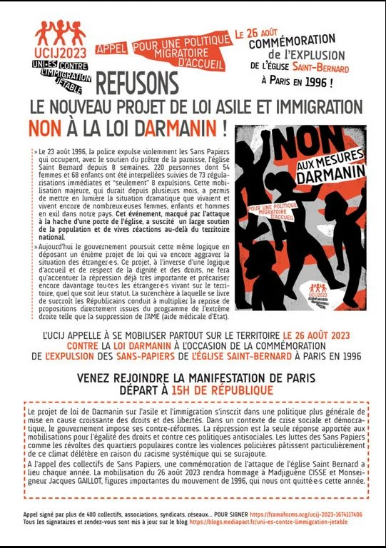

Appel archivé
« Non à la loi Darmanin ! » L’appel de l’UCIJ du 26 août 2023
Date indiquée par Facebook · 25 août 2023
Repères éditoriaux
Nous avons relayé l’appel de l’UCIJ à des mobilisations contre le projet de loi asile et immigration, à l’occasion de la commémoration de l’expulsion des sans-papiers de l’église Saint-Bernard en 1996. Le tract annonçait un rassemblement parisien à 15 h, place de la République.

Sources
Archive rouge · document diffusé sur Facebook · AR-0002-FB-01599
À lire aussi · À la rentrée 2026, au moins 2 355 enfants restés sans solution d’hébergement